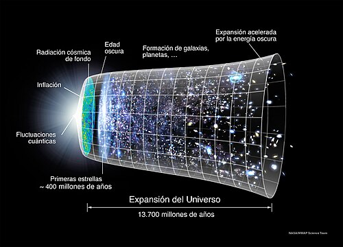
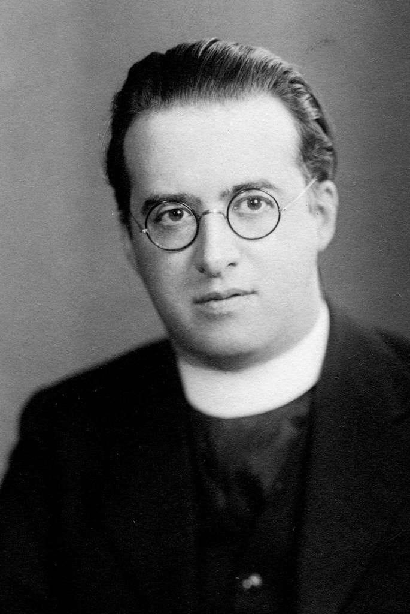

El Big Bang no fue una explosión como una bomba. Fue el estiramiento repentino del espacio mismo. Imagina un globo con puntitos dibujados que se infla: los puntitos (galaxias) se alejan, pero no porque se muevan, sino porque el globo (el espacio) crece. Así empezó nuestro universo.
No es solo una teoría. Tenemos 3 pruebas:
El astrónomo Edwin Hubble descubrió que las galaxias se alejan de nosotros. Si hoy se alejan, antes estaban juntas.
En 1965 se detectó un eco de calor por todos lados. Es el calor que quedó del Big Bang, a -270°C.
El Big Bang predice que debe haber mucho hidrógeno y helio, y es exactamente lo que encontramos.
El universo tiene el tamaño de una canica y una temperatura de billones de grados.
Se forman los primeros núcleos de hidrógeno y helio.

Por fin el universo se enfría lo suficiente para que nazca la primera luz. Esa luz es la que vemos hoy como radiación de fondo.
